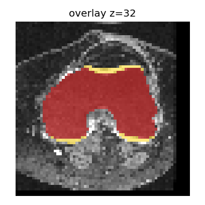
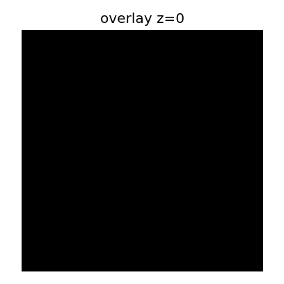

Explore the tool
We have built a knee MRI segmentation tool with AI assistance. Now we want to hand it over to another researcher.
What you see
Loading slice assets…
- Input: a 3D knee MRI as
.nii.gz(NIfTI). - Output: a segmentation label map (also
.nii.gz) plus an overlay PNG for inspection. - Display: one 2D axial slice from the 3D volume (subset of slices exported for the stand).
- This stand: uses precomputed predictions to show the software workflow. It does not run fresh nnU-Net inference by default.
Technical details (verified from packaged files)
Discussion
Before handing this tool to a colleague, what should we check?
- A valid input produces a readable segmentation.
- An invalid or missing input produces a clear error.
- Reported quality checks reflect each anatomical structure — not only a mean score.
A successful demonstration shows one run worked. Tests help us check specific behaviours repeatedly.
Generate useful tests
Two teaching examples: a high average score that hides a missing cartilage region, and a preview image that does not match the saved segmentation.
A. Define a useful test
A test prepares a scenario, runs the software, and compares the actual result with an explicitly defined expectation.
Example 1 · A good average score can hide a missing part
Vague prompt:
Write tests for this segmentation tool.
Plausible generated checks:
def test_quality_ok(pred, gt):
assert mean_dice(pred, gt) >= 0.70
assert pred.max() > 0
Ready.


Mean Dice can stay near 0.75 while label 5 Dice is 0.
Does a good mean Dice prove every structure is present?
The teaching quality gate only checks mean Dice. Lateral Tibial Cartilage can disappear while the aggregate score still looks acceptable.
Improved prompt (copyable):
Inspect the quality-gate helpers in vibe_to_trust.challenges.stand_examples (accept_by_mean_only vs accept_with_per_label). Add a pytest that builds a teaching prediction from the packaged case by removing label 5 (Lateral Tibial Cartilage). Keep the ground truth unchanged. Assert that a mean-only gate may still accept, while a gate that requires every foreground label Dice >= 0.5 rejects this prediction. Do not only assert mean Dice. Do not modify examples/case_001. Run the test and explain what the result demonstrates.
Ready.
Reveal minimal fix
Require a per-label Dice floor for each structure, not mean Dice alone.
Example 2 · The preview image may not match the saved result
Vague checks often only ask whether overlay.png exists.
Ready.


Same NIfTI prediction; PNG written from z=0 instead of the mid slice.
Does a valid-looking overlay prove it matches the current result?
The teaching exporter saves the correct prediction but writes overlay.png
from another axial slice. Existence checks miss this.
Improved prompt (copyable):
Inspect export_case_outputs in vibe_to_trust.challenges.stand_examples. Add a pytest that exports with bind_overlay_to_prediction=False, then regenerates the expected mid-slice overlay from the saved prediction and compares file content (e.g. SHA-256). Assert the unbound export fails that comparison, and bind_overlay_to_prediction=True passes. Do not only check that overlay.png exists. Do not modify examples/case_001. Run the test and explain what the result demonstrates.
Ready.
Reveal minimal fix
Always regenerate overlay.png from the current prediction at the intended slice index.
Review
- Does the test inspect the quantity that can actually go wrong?
- Does it fail when the targeted defect is present?
- Would keeping these tests catch recurrence after future edits?
Hand over the tool
The tool now has a test for the issue we found. Tomorrow you are unavailable. Can another researcher run and check it using only the README?
Incomplete README
Knee MRI segmentation tool. Install the dependencies and run demo.py. Results are saved in the output folder.
What would you need to ask the author before you could use this?
- What does the tool do, and what are its limitations?
- How do I install and run it?
- What input do I need?
- What output should I expect, and where?
- How do I run the checks and interpret the results?
Ask AI to improve the README
Inspect this repository and improve its README for a researcher who has not used the tool before. Explain: 1. What the tool does and its limitations. 2. Required inputs and example data. 3. Installation and exact commands, including the working directory. 4. Expected output files and how to inspect them. 5. How to run the tests and understand the results. Distinguish cached demonstration from real model inference. Verify commands and file paths against the repository. Do not invent capabilities or claim checks were run if they were not. Keep the README concise.
Meaningful additions (aligned with this repository):
- Working directory = repository root;
pip install -e ".[test]" - Exact commands:
python scripts/demo.py --no-open,python scripts/run_tests.py,python scripts/tutorial_lab.py - Expected outputs:
outputs/demo/prediction.nii.gz,outputs/demo/overlay.png - Cached demo vs optional real inference (
model/README.md) - Limitations: downsampled extract; not clinical software
Practical handover task
Using only the README, identify: (1) the first command to run, (2) where outputs appear, (3) the command used to check the tool.
Close
- Define expected behaviour.
- Ask AI to generate a focused test.
- Verify that the test detects the intended defect.
- Document how the next person can run and check the tool.
Completing this stand does not verify the entire tool or establish clinical readiness.